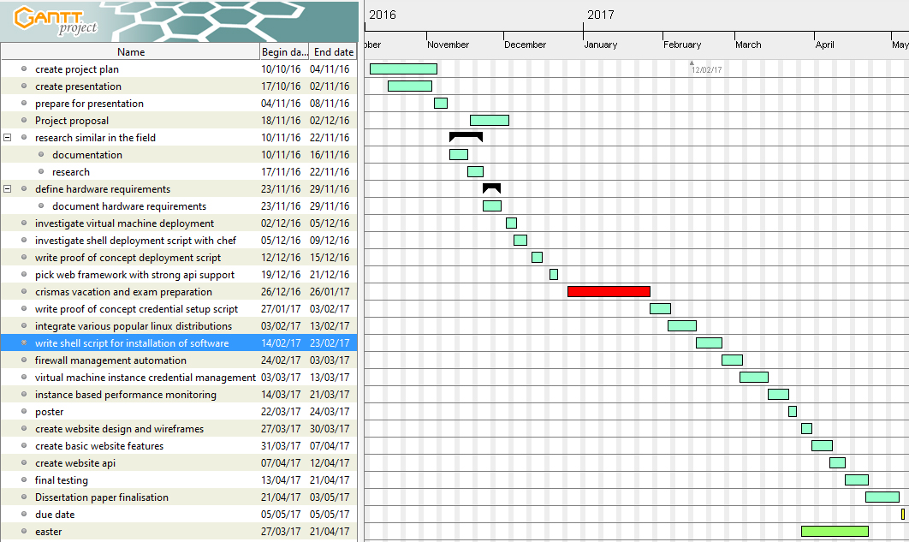
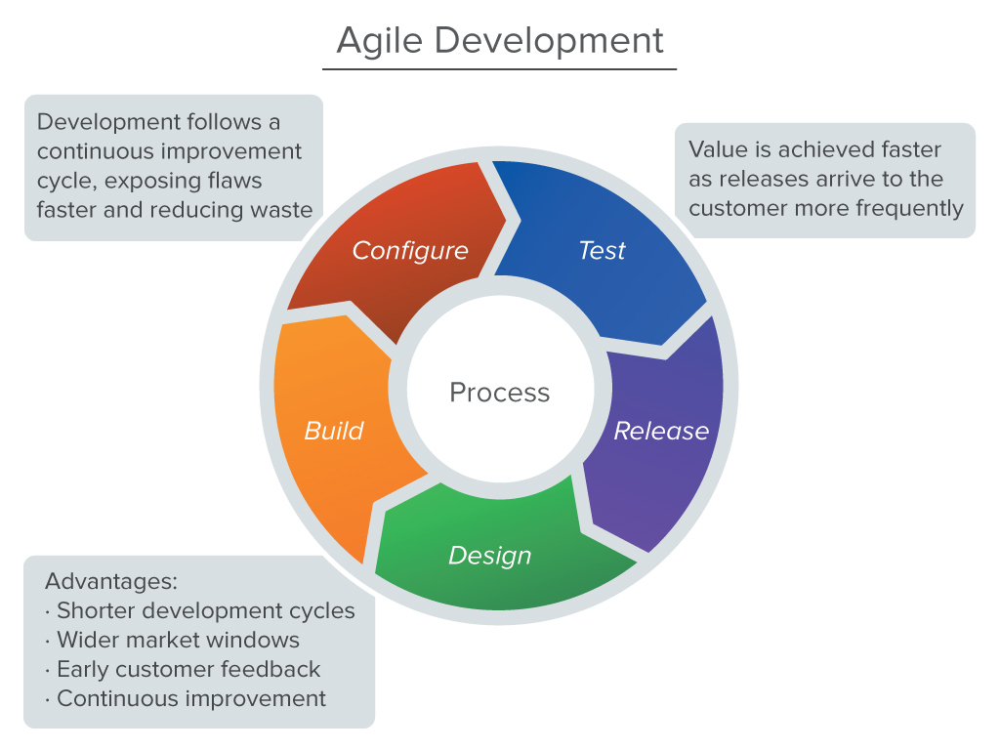

CSC3095:Web Platform for Digital Deployment of Virtual Servers
03.03.2017


I declare that this dissertation represents my own work except where otherwise stated.
pending


pending


As of the year 2016, there are currently three billion people that have access to the internet [15]. Google handles between two and three billion search queries per day [30]. Dealing with so many requests on daily basis requires full utilisation of the available hardware resources. Part of Google’s ability to scale and be efficient is due to the emergence of cloud infrastructure. The topic of this paper deals with one of the building blocks of cloud computing - virtualisation.
”The quickest and cheapest method to providing the necessary level of abstraction in terms of server resource is currently virtualisation…”
— Paul Robinson, Google Cloud Computing [38]
The term virtualisation is defined as the ability of one piece of hardware to run multiple operating systems [17]. In this paper, a virtual machine, or an instance, is an operating system that runs on top of a ”physical” operating system. The ”physical” operating system is referred to as the ”host” system. Creating a platform that uses such technology enables an organisation to quickly set up any environment (operating system) that can be used in a variety of cases. It is important to note that there are two forms of virtualisation, bare-metal and hosted [10]. This work uses the latter approach. The difference is illustrated in 1.
When a business wants to buy a high performing computer for each employee, that would requires physical access to perform repairs, maintenance and management. Physical systems are more difficult to manage because they are distributed across a large area, making quick access slow or impossible. Another downside of not using virtualisation is non-scalable hardware utilisation. This is the case where one machine uses maximum resources but another one is idle. A computer that has predefined hardware specification cannot use more processing power than initially installed. Automating physical servers is also nearly impossible due to them lacking the necessary abstraction control layer.
These are some problems that virtualisation technology can solve. It is now a core part of most new desktop Intel chips and is integral part of all server-grade processors as listed in the manufacturer’s page [31].
This helps with performance, as a virtual machine can be configured on the fly to use flexible amount of resources or a shared pool of computational units. This technology also allows for easy server migration. A physical machine cannot be moved in a couple of minutes to a different continent (physical location) but a virtualised operating system can be ”copy-pasted” at will for very little cost. Physical infrastructure is also prone to hardware-related bugs. This is a case when a software solution causes issues, because it was not tested on all the machines that run it. These physical machines might have different network cards, processors, lack certain hardware components or have older hardware version. The virtual platform has the benefit of abstracting away these components, ensuring that once tested, the software running on top of it would exhibit predictable behaviour [? ][p.59].
How does virtualisation allow for easy migrations? It achieves the task by abstracting away the available physical storage medium. On the virtualised host, they would appear as a large pool of partitions with the data ready for management. Figure 2 shows a real world application, where more storage device can be added and the current one can be assigned/managed.
Having access to the virtualisation host allows the data of such system to be copied all at once to a different provider with the only requirement - have enough capacity to store the information. The alternative without using a virtualisation platform would be to gain physical access to each storage medium individually and copying the data incrementally.
The project aims to utilise open-source virtualisation technology and make the process of managing and creating virtual machines automated through a web interface. The solution should allow a system manager to open a website, fill in a web form with enough information about the desired operating system, click a button and create it. After that, the person should be able to securely download identity file and connect to the machine.
The management website should also allow for the selection of predefined software packages. The solution should also show if the virtual machine is alive and allow the user to shut it down and bring it up. Port management should also be possible when building the machine. These features, alongside the benefits of virtualisation should create a secure infrastructure for many applications, from virtual office workstation, to server testing and deployment.
This solution is aimed at small companies who want to get the benefits of virtualisation, as well as easier machine management. It does so by giving the user common Linux versions, simple credential management and instructions during operations. The target demographic is also businesses who have low budget for automation and system management and cannot afford to have a dedicated team member for the task. Another use case is individuals who want to perform calculations on a machine and then power it off, who do not have resources or the time to set up their own environment.
Give developers a platform for easy deployment, management and monitoring of
virtual servers.


”The most important feature of virtualisation that enables its cloud capabilities is the level of abstraction it provides. The key feature is the ability to hide the underlying hardware architecture.” [24][p.59]. The article Heterogeneous Cloud Computing: The way forward considers an architecture that interleaves different hardware components together, enabling their utilisation on-demand. For example, a cluster of graphic cards or processors that support different operating system architectures (x86, ARM, ATOM) can be attached in domain-specific tasks. Such set-up would allow the platform to be more flexible and less congested because these dedicated components would do the ”heavy lifting. It also has the benefit of doing special computations - like rendering video much quicker and efficient.
”Virtualization abstracts compute resourcestypically as virtual machines (VMs)with associated storage and networking connectivity. The cloud determines how those virtualized resources are allocated, delivered, and presented. Virtualization is not necessary to create a cloud environment, but it enables rapid scaling of resources in a way that nonvirtualized environments find hard to achieve.”[4][p10]
Virtualisation provides the abstraction that makes it much easier to get data to and from the cloud. This technology is the basis for creating high availability services and applications when implemented properly.[4][p10]. Intel’s virtualisation and cloud computing guide talks about it as a way to provide corporate platform services in a more organised matter. The guide also covers making the infrastructure easier to organise from the standpoint of I.T.. This is the case because these virtual servers are easier to diagnose and monitor as well as organise and automate [4][p8]. Virtual machine diagnostics and monitoring is a practice where the behaviour of the machine is observed over a period of time. This includes network traffic, memory usage, CPU performance and utilisation. It also contains information about how much disk storage the machine is taking and information about the machine’s running status. Additionally, x86 computer architecture support hardware statistics counters. Performance counters are part of the kernel’s sub-system and are the basis for providing reliable hardware information for monitoring and reporting [25]. This data can be used to gain insights into why a machine is malfunctioning. These counters can be vital in determining the type of issue with the machine (network related issue, hard-drive read-write failure, defecting processor, etc.). Network outages can be detected and accommodated for by analysing aggregated network statistics. This is useful in an event of denial of service attacks (DoS). High networking usage might indicate malicious behaviour such as artificial congestion - an attacker making numerious requests to slow down the service. On the other hand, this type of monitoring can ensure on-demand scaling in critical moments. Legitimate customer demands must be met by allocating more hardware and network bandwidth as a result of increased demand.
Virtual machine organisation is the practice of managing a variety of components
associated with the platform and its resources. The I.T. department of an
organisation is in charge of managing the physical storage on which the
”virtual” platform is running. In the infrastructure disks are partitioned and
organised in pools - then mounted over the network. This configuration
uses S.A.N, or storage area network. This is a network entirely dedicated to
transferring data between computer systems and the storage drives [32][p.11].
Mapping physical drives to virtual ones over the network is a stepping stone in
enabling any type of server infrastructure, including virtualised one, to have
enough capacity to grow and meet the customer’s demands. It also ensures the
right level of redundancy, as a large portion of the hard drives can be put in
place in case of a failure. Storing virtual machine on network drives makes it
possible to copy machine instance from one cluster to another, or change data
centres.


Any server infrastructure requires high bandwidth network connection, virtual networks are no exception. The network throughput of the platform depends on the internet service provider (ISP) physical connection speed. That network is used by the virtualisation platform and is converted to numerous private and public networks internally. The benefits of such abstraction is the ability to create flexible and disposable internal/external networks per machine or cluster of machines. The ability to share a network, or be in a private network is a security consideration. This feature is important from the standpoint of security. For example, for a business logic application, one can set up a client-facing web server that is accessible from the global internet. The machine on which this application is running will have a database connection to another machine running a dedicated database software (mysql, postgresql, mongodb,etc.). The connection between the two machine would be configured as a private network. It ensures that nobody from the outside world has access to that database machine. This configuration is explored in Amazon’s accessing database instance in a virtual cloud[29]. The setup is shown in figure ??.
It is impossible to talk about such infrastructure without considering the most important component of operations, the CPU. When providing the hardware resources for computing, having enough calculation power is essential, otherwise each virtual machine would be slow and unresponsive. A server rack with many IntelTMXeon or other server-grade chip are set to run on top of the virtualisation technology (virtualbox, VmWare 1. All of the computing resources are then also abstracted away. For example, when using VmWare vSphere, instead of seeing every single processor, you are given the option of allocating certain amount of megahertz per instance. A guide on configuring CPU usage is covered in VMware Cookbook [36]. CPU allocation screen is shown in figure 4
Considering the fact that all of these hardware components have to be managed by a human to ensure smooth operation during heavy and light loads, automation plays very big role in the process. Automation is the process of automatically creating virtual machine and dynamically allocating computing resources associated with it. Big cloud platforms such as Amazon Web Services and Azure have almost absolute automation. Azure even provide their tool as a service - Azure Automation [9], Amazon use tools like chef and in-house tools [23]. Computing resources are allocated based on usage, where a paying customer can use a lot of resources for a certain price (scaling on demand).
For the duration of this work, a variety of technologies, frameworks and utilities have been evaluated, that will achieve the goal of automated system deployment. Part of the work was experimenting with different ”cloud” virtual machine deployment services. This has given insight into the key requirements that ought to be provided by the platform.
Something that all major platform providers have in common is the ability to scale and their price model. The reason is that the platform allow for the hardware configuration parameters to be tuned at will per user within minutes. This means that when the virtual machine is created, later on the ”hardware” resources can be modified and changed easily.
A commonality is the price model. All of the below mentioned platform providers use some form of pay-as-you-go. This means that companies requiring extra computation at time critical periods can take advantage of more computation. An example would be personal project of Harrison Kinsley for gene sequencing in his online learning series[19]. He used 5 GPUs for an hour to perform the necessary computation, then retrieved the results and then destroyed the machines. As a result, one can use sophisticated hardware for a fee with very little set-up overhead.
Amazon are the leaders in cloud deployment with 30% world market share[11]. Their services range from providing DNS to deploying their custom virtual machines. Because of the widespread usage of their service (popularity), this is the main platform that inspired the work.
The main focus of the dissertation is not about the AWS platform, but about their service EC2 - virtual machine deployment.
EC2 allows a user to do the following:

 Linux, Amazon Custom Images). They also offer machines for database
only purposes (Amazon RDS).
Linux, Amazon Custom Images). They also offer machines for database
only purposes (Amazon RDS).
Some other benefits of EC2 is the ability to integrate with every other Amazon Web Service product. The service is also running on top of Amazon’s network which ensures reliability and availability across many regions. EC2’s pricing model has application for hobbyists and corporations alike due to the provided hardware options and the flexible pricing. Prices range from $0.044 to $14.400 per hour [14]. The service also receives publicity from having Netflix and Airbnb hosted on their platform. A downside to AWS is that they do not allow for custom kernels to be used, leaving users to rely on the predefined images provided by the platform.
Microsoft Azure is also among the biggest virtual machine and cloud computing
providers in the world and has 10% of the global market[11]. As this is a Microsoft
product, it is fully integrated with their text editor - Visual Studio. This makes it
easier and more convenient to develop, deliver and integrate with Azure through the
tool. Azure also has the benefit of being a very large provider - allowing them to use
34 data centres distributed across the globe [5]. This ensures high availability and
fast response times. The service is also compliant with regional regulations and
requirements, making it suitable for fintech and health service deployment
[6].


As the platform is provided by Microsoft, the creators of Windows, it can provide operating system specific features to its customers, such as integration with their products and services. This makes it ideal form Windows compliant companies that have bought licensed corporate software. Similar support would be difficult from a different provider, as they are not the maintainers of the software provided. Users of Azure also have the benefits of Microsoft Windows features coming first to their platform.


This chapter aims to give a more in-depth view into the process of scoping, developing, planning and building the application. This ranges from picking the tools to limiting the scope, making assumptions, as well as the scheduling of each task. Creating such a platform from scratch is a daunting task even for an experienced software engineer.
For the above reason, the initial research into building the right tool-chain was essential to the success of the project.
The development methodology can be broken into the following steps:
A hypervisor is a computer software or hardware that creates the platform layer
to a virtual machine and makes it possible to host multiple instances with different
configurations [22].


Initially, the plan was to use a hypervisor virtualisation solution such as virtualbox and VmWare just by themselves, and use the bash shell scripting language to interface directly with them. A decision was made to use Virtualbox, as it is an open-source software solution, has strong community, allows third party plug-ins and is a solution build by Oracle - a large software corporation. There are other alternatives (gnome boxes, CHROOT), but what influenced the choice is that virtualbox is configurable and can be controlled from the command-line straight out of the box. Another deciding factor was also the extensibility that it offers with third party modules developed by the community and the core team (guest additions, virtualbox standard development kit).
Another reason for not choosing a more unpopular technology is due to the willingness of an adopter to switch their entire virtual infrastructure to it. The Virtualbox software is well supported by Oracle, and as such, it would make the transition to the platform easier.
During the period when researching Virtualbox, the command-line API documentation was used extensively. In the process, a variety of customisable parameters when building a virtual machine were discovered, like the different possibilities in setting up networks (private, network shared, host only, etc.), exposing ports, as well as different hardware configurations (RAM, hard drive, CPU count). After using the command line tools and writing a simple shell scripts for managing creation of different resources, a decision was made to use a tool that manages the different technical details of each virtual machine. Instead of building the manager from scratch, an open-source hypervisor provisioner software was used instead. The tools is called Vagrant.
Vagrant by Hashicorp, is a tool built by a company specialising in easy virtual machine configuration management and set-up Their API provides the following features.


The framework that was created uses a virtual machine instance object and authenticated user that owns it. When the user fills the web form with the relevant information, it will pass the configuration values directly to a virtual machine class. This class contains a dynamic configuration, which ensures that the solution is distribution agnostic. Here, the term distribution references to the different versions of Linux (Ubuntu, fedora, Centos, arch Linux). Separating dependency specific configuration by sub-classing a configuration object allows for a quick way for the project to be extended to accommodate for new distributions.
To do so, folder with the name of the new distribution must be placed in lib/configurations that describes the configuration specific settings that include updating and installing common software packages.
The framework also uses UNIX environmental variable to manage infrastructure state. For the purpose of continuous integration, two main isolated environments are used - testing and development/production. The most notable usage of such environment is the virtual host-only network that ensures that network interfaces do not clash during testing and development. The two interfaces are vboxnet0 and vboxnet1. One is for general purpose development, the another is for testing. A special host-only adapter is used to have an isolated ip range that is network agnostic, for example, on a NAT network, some IP addresses might be reserved or used, this case will cause a clash and the virtual machine will not be reachable.
Continuous integration is a new software development practice where versions of
the product are merged and available after testing/building phase. It also enables
features to be developed separately from the production environment. This
has the benefit of ensuring production code performs as expected without
interruptions.


When considering the architecture of the system, a list of factors were evaluated when building the solution. One is having few well consolidated moving parts, ensuring flexibility and extensibility. For that purpose the programming language ruby was chosen. It is a suitable for system automation as it is very expressive and is for the most part platform independent (interpreted). Its suitability comes also from the available tools Vagrant and puppet which allow end-to end integration when developing and testing. The ruby programming language also draws inspiration from the Perl programming language. One of the Perl’s strengths is its ability to be a more powerful shell scripting language as well as a general purpose language. This is the case as it has quick syntax for executing shell scripts directly and get STDOUT, STDERR and exit-codes quickly. It does also has native implementation of common UNIX tools, like grep, wget and awk (core GNU utilities).[2]
Because the Ruby language draws inspiration and shares similar features with Perl, it makes it a great modern and powerful language to use in this domain-specific problem. The language benefits from it bein written in 1995, and being very mature. For that reason, there is a great amount of online help and third party library of great quality.
The first component of the work is a ruby module designed specially to act as a back-end for the entire solution. A module is a collection of programming functions and libraries that are bundled together to achieve a particular task. In ruby, modules are called gems. For writing my first gem, the official ruby guide was used as guide [35].
The file lib/deeploy.rb is what sets up the database connection and bootstraps the whole module by auto-loading every component. To ease integration, the file loads configuration properties from the file lib/config/application.yml. Application.yml contains configuration for production, development and testing, this is to allow separation and configuration of different parameters. The file specifies location of the database file when in development, or it has the database drivers in production with information about connection parameters. The file also describes the network interfaces to be used in each environment.
lib/deeploy.rb has a helper method that returns the current network interface and network mask, this function is responsible for generating IP addresss and also for verifying that the virtual network is up and running. It does so by issuing commands for bringing up the virtual networks vboxnet up, then using network sockets to extract relevant information. This function is the programatic equivalent to the command ifconfig or ipconfig.
The file also contains a static function that returns a map of all supported distributions and the associated Vagrant machine. The function is helpful when validating creation, and will error out if the distribution name is not in the list. When extending the supported distribution, this function needs updating.
Similarly to the supported distributions function, there is a static function to return the supported packages list, used for displaying the options and validating unsupported packages.
The module provides a function slugify, its purpose is to convert string with special characters and spaces to a set of words and dashes, non-ASCII characters are stripped.
IP address helper function checks if the supplied is part of the current network by using ruby’s ipaddr build in module.
The file lib/vm.rb contains the code for managing the virtual machine instances, the class is called Deeploy::Configurable::VM. The class inherits from Configurable. Calling VM.new contains validators that raise errors upon initialising the class inappropriately. The method is responsible for specifying the distribution, available resources, configuration destination, name of the instance, packages, open ports and prepares it for creation. A design decision was made to allow a machine to be configured with the new operator and then created by issuing machine_instance.build().
The method VM.alive() verifies if the machine is alive by trying to listen on SSH port, if it fails within a time-out, the machine is updated to state of not alive.
VM.get() is used when performing power up, power down and destroy virtual

 machines. It queries the database and discovers everything about the instance, from
packages, to RAM and location of configuration files.
machines. It queries the database and discovers everything about the instance, from
packages, to RAM and location of configuration files.
The virtual machine is built only when an instance is initialised properly by calling VM.new with the correct arguments and then invoke VM.build(). The design decision to have a separate functionality of bootstrapping instances was mainly for cleaner testing by compartmentalising the components into smaller elements. The build method also accepts a boolean argument. This argument tells the current build if it is in ”dry-run” mode. The mode, the machine will create directories and configuration without actually bringing the instance up and running. This is again, done for testing reasons - they verify that different distributions have appropriate configurations.
During the invocation of the build method, a bash shell is forked and it executes the Vagrant command that brings it on-line and installs all dependencies. The shell command also tells the script to write all output to a text file in the machine directory, the file is called vagrant.log. Because the process takes a long time to finish, an axillary function _wait_on_build is used. This function constantly goes through the contents of the log file and checks what is the current building state of the instance. Typical states are building the base, installing puppet, setting up dependencies, installing packages and the state everything has finished. Upon a successful build, the sub-shell executable will create a file called build.log. The file will contain a build status. Reason for doing so is that otherwise successful run is determined by exit-code of vagrant, which is not a reliable method of determining success.
The module also partitions the file structure in two parts - userspace and test_userspace. The concept of userspace is used to contain virtual machine configurations in a hierarchical structure. Inside, there is a folder representing each user registered through the web interface. Inside the user folder, virtual machine folders with their respective names can be found. Each virtual machine folder contains Vagrantfile - file that describes network configuration, machine type, available hardware resources, etc. The folder also contains vagrant.log. This contains detailed information of what happened during the machine build process, and is the file that a user can view through the web interface.
In manifests, two very important files can be found. One is in charge of automating firewall rules, packages, users and permissions. This automation is done once the machine has been brought to live. The file is created by the configuration manager depending on which Linux distribution has been used. This folder also contain a shell script that can be used when automation script is lacking. This file has been left there for integrity. As mentioned, there is also a top-level folder called test_userspace, it is used for separation of concerns and is where testing machines are deployed to keep production machines intact.
The process of building a virtual machine by the deeploy module is also illustrated in figure [? ].
Because each machine has to be connected to the outside world, network IP address has to be allocated to each instance. This task is achieved using virtualbox’s host-only adapter. The gateway address of the adapter and its network mask are obtained and a list of possible IP address addresses are generated. Out of that list, all reserved ones are blacklisted. Additionally, the database gets queried for a list of already allocated addresses. After the process, the machine picks the first address from a stack and the value gets used. The reason for allocating them sequentially starting from the top is to avoid collisions. Other methods caused issues where the algorithm had to be run multiple times to obtain reliable results.
After generating the address, it gets blacklisted for further use, ensuring uniqueness on the network. When a machine is destroyed, its address becomes available again.
Additionally, the process of creating a virtual instance is using a custom image that has a variety of pre-installed software and firewall rules specially created for the dissertation. The purpose is to increase deployment time and allow for a more controlled package list.
Then a friendly name to virtual machine instance name map entry has to be added to the deeploy.rb. Then a folder with the name of the new distribution must be placed in configurations containing files who subclass firewall_config.rb packages_config.rb puppet_config.rb shell_config.rb vagrant_config.rb. These files might be left blank if the distribution uses the default commands. Any deviations should be extended via the child modules.
Discuss the web interface
Virtual machine instance isolation, privacy and authorisation is one of the most
important security concerns. This section describes the decisions and considerations
made during the development process. A variety of architectural and operational
choices were also made to ensure that upon security breach, little or no data gets
leaked.


The system makes the assumption that the management software is not compromised, as this is where all user credentials and data is stored. Access control is done via relational database and every machine command is authenticated against it.
For password disclosure mitigation, the passwords in the database are not stored as plain-text. Instead, the bcrypt hashing algorithm is used with salt and pepper. In production, the operation is done for 11 rounds. The number of round is a configurable parameter.
A decision about access to the machine was made in favour of public-private key cryptography instead of using password. This improves security, as it generates unique pair per instance, and eliminates the risk of forgetting the password or having someone steal or guess it. Two strategies were considered - allowing users to import mandatory public key they initially generated, or generate key that the user can later download. The second approach was selected, as it would make it much more convenient and intuitive for the target demographic of the platform. Future work should allow paranoid system administrators to generate their own keys and disable any keys generated by the system.
When using the command line tool on the server platform, UNIX command ps can be used to see all arguments passed to the build tool. When using the –password flag, this will disclose it. For this exploit to happen, the platform owner must invoke the tool manually.
In the most common case, this command would leak the API key of a user. Future work might opt for using a hash of the API key and have the option of regenerating it. This would significantly reduce chances f further exploitation upon system breach.
This is one of the greatest benefits of running in a virtual environment. All the
machine operating on top of the platform are isolated from one another and one
operating system’s calls cannot interfere with another. In terms of architecture, this
is a good design, but there are some drawbacks.


One of the most severe issues with guest isolation is exploiting a vulnerability in virtualisation memory and reading another machine’s memory. This attack is known as ”Virtual PC Hypervisor - Memory Protection” [28]. An exploit can cause passwords leak and disclosure of sensitive information.
The tool Vagrant has two modes when generating access keys - insecure and secure. When insecure keys is used, every machine has the same credentials. The second configuration is used, as exploiting one instance leaves the whole infrastructure breached.
Furthermore, once the SSH keys are downloaded by the client, they are cleared from the host system.
The solution does not provide modified version of any software - the reason is to reduce overhead of maintenance cost. Even though the machines have pre-installed applications, they have not been modified. This approach makes it possible to easily update any package from its official maintainer instead of by the platform vendor who would not necessary be expert in package management.
This work has been developed using the official documentation for every framework or language. The goal is to minimise exploitation vector by following the instruction of organisations, as they have greater insight into best practices. This makes the solution easier to maintain.
One of the concerns when developing the platform is testing interoperability. Due to the many moving parts, a subtle change might break the whole system. For that reason, a variety of automated, manual and build in tests are ran periodically.
Most notable, the core gem deeploy contains unit tests covering every element of the machine process. The official best practices guide was used to bootstrap the process [27]. The ruby unit test framework is called minitest and is the recommended solution by the official guide.


The evaluation of the work has been done with the help of Newcastle University I.T. department. They helped with identifying potential security and usability issues as well as give general feedback. This chapter contains a detailed overview of their evaluation and also personal reflection about the achieved tasks. Overall the solution meets the specification requirements. Improvements can be made, as this is the first version of the platform and a perfect solution cannot be achieved from the first iteration.
The requirement Objectives is listed on page 9 in section ‘4.3.2’. The objective of deploying a virtual machine has been achieved by giving the user the opportunity to deploy 3 distinctive distributions. The process takes between 1-5 minutes and requires an authenticated user.
When using the back-end tool, it is possible to do everything that the web interface can. Issuing deploy --help and deploy new --help brings up a help menu that gives a detailed command line manual page. Figure 7 and 8 show the output.
The interface thoroughly gives information about how to achieve a task with examples. This way, manual deployment can be done with minimal knowledge and lack of documentation by someone unfamiliar with the system. Creating this feature costed large amount of time that could have been allocated to a different feature. The reason is that the tool would rarely be used manually and all the work would end up unnoticed.
The time it takes for a machine to build is critical, the project aimed to allow the user to quickly create a machine and be notified upon completion within sensible time. The deployment time of Ubuntu and Debian takes 1 minute (figure 9), Centos takes between 1 and 2 minutes (figure 10 and 11).


A deployment of a machine took more than 5 minutes initially, but work went into reducing that time by packaging common applications together. This approach was successful and reduced client’s wait time significantly, making the tool more usable.
The benchmarking numbers are achieved on Intel(R) Core(TM) i3-4170 CPU @ 3.70GHz, ATA Samsung SSD 850 EVO drive. Machine running Fedora Workstation 25 Headless.
During build time, the deployment script outputs progress messages when key stages are detected. The system would become more user-friendly if more stages are added. Increasing response time adds to usability and perceived reliability.
Deploying a machine successful is not always the case. Large chunk of the code ensures that errors are detected, reported and deployment is rolled back (cleanup). This is important, as the user of the system must always be aware of any progress or failure. Detecting and reporting unsuccessful builds is done via providing failure status in the web interface. The failed machine’s logs are also accessible, making it possible to report issues via emailing such files to a system maintainer. The platform detects network failures, IP address allocation errors, bad arguments or build taking too much time as well as deployment script crashes. An issue with this process as of now is that detection happens, but detailed report of what went wrong is lacking. An extension to the system should allow the user to go to a dedicated error page. It will give a description of what exactly caused the failure and give the ability to report it.
Part of allowing users to use any machine they want is due to the platform being
extensible. As described in the work section of this paper, the solution achieves this
extensibility - evident by the supported multiple machines. The issue with this
feature as of now is lack of documentation. An article that describes the process of
adding a new supported distribution with pictures and examples would improve
adoption and ease of use for future development.


The requirement Objectives is listed on page 9 in section ‘4.3.2’. Part of the specification is about monitoring virtual instance’s health. This topic includes detecting machine crashes, sending log reports, restarting the kernel upon failure, monitor available resources and much more. Because creating a complete health monitoring solution would have been outside of the scope of this dissertation and would have taken large amount of time, a compromise solution has been provided. What has been implemented is a balance between effort and usability.
The current solution uses CRON job to check the status of each virtual machine every minute. The result updates the web interface and a user can notice that a machine is running or not. The process involves checking if the SSH port is responding to packet alive messages. This port has been selected, as it is the gateway to the machine. If no response is given back, the machine is assumed to be dead or unusable.
Other than alive information, the solution provides detailed statistics about resource usage over time. It can show processor load over a large time period, disk writes, network traffic usage and many more parameters. This information is available in the web interface under each machine’s own section. The implementation is shown in figure 12.
Checking the ’alive’ status of a machine can be implemented more efficiently. The current implementation is prone to scalability issues, where numerous instances linearly slow down the process. The check also has a large overhead due to making requests to every possible machine (even ones that are known to be in good state). Future work can improve the process by adding a ping service on each machine, which periodically contacts the server to update ’alive’ status. This approach would help with scalability and would reflect a machine’s state more accurately. Furthermore, the Nagios software can be installed on each instance for even richer status information. Nagios is the industry standard in I.T. infrastructure monitoring [8]. Having this open-source professional grade software would also benefit the platform when it comes to adoption and reliability.
The requirement Objectives is listed on page 9 in section ‘4.3.2’. Large portion of the work went into creating an intuitive web interface through which a machine is being deployed. During the demonstration, positive feedback was provided for the overall experience and feeling throughout the process. Once the user logs to the web interface, the option to create a new machine becomes available. The pages are shown in figure 13.
When submitting the form, few validation passes are made before the machine is build. Validating parameters is essential, or the build process will fail when receiving incorrect arguments. The form provides clues about failed validation, making it convenient to fill in the correct details. Validators check uniqueness of machine name, presence of virtual machine owner, distribution, RAM within range and conflicting packages.
When the correct parameters are passed and the form is successfully submited, the user receives a progress bar indicating the build status with two possible outcomes - success or failure. The various stages are shown in figure ??. Upon failed build, the logs can be checked to gain insights into what went wrong.
From the web dashboard, it is possible to view the running state of all machines. Extra information about IP address of the machine, user name and distribution is also displayed. The interface also allows for the machine to be powered off, turned back on or destroyed. The dashboard allows the user to download authentication certificate and gives instruction commands on how to access the machine.
This window makes it easy for a new user who has not used certificate based authentication to quickly access the machine. User experience techniques are also used to illustrate commands, failures, and important information. The dashboard is shown in figure 14. The page is also responsive, ensuring proper presentation across different screen resolutions.
The requirement Objectives is listed on page 9 in section ‘4.3.2’. The feedback from NUIT for using certificate files for authentication instead of passwords was positive. As part of the security concerns, this provides secure authentication channel. Future work should allow users to generate keys themselves and import them though the web interface, as well as revoke old certificate keys. The decision to give preconfigured authentication credentials is because of the target demographic. Potential early adopters of the platform will have little to no experience in the field and would appreciate the convenience of credential being already set-up.
Currently little to no documentation is provided. This can be improved by writing articles on how to deploy the platform to a host with different configurations. Also the inclusion of ruby documentation (rdoc) embedded in each source code file would improve code maintainability. This type of documentation is very helpful when new developers join to develop. Having a quick description of what each code function does can significantly reduce training time.
The requirements Objectives and Objectives are listed on page 9 in section ’4.3.2’. The solution provides the ability to open network ports to the outside world and to do package management during the install process via the web interface. Currently, few common packages can be installed to illustrate the functionality. Future work should go into finding the most vital packages and offer them as an option. This is possible due to the ability of the solution to extend packages, ports and deployment flow.
Something that is currently lacking is the ability to amend ports and packages. After the build process is over, one can manually connect to the machine and install/remove software but the process is not automated after the machine is already deployed.


During the deployment process, a machine is validated on its own and the platform’s state is not considered. For example, if there is not disk space available or the system is low on RAM, this will not get detected and failure might happen. This has not been implemented because it requires managing virtual hard drives and storing meta-data about the virtual machine with status of the whole platform. It would require large sum of work and would take significant amount of work, possibly making it impossible to deliver the platform on time. Not tackling this issue helped allocate more time on the core components and the actual operations of this work.


Because of the limited duration of the dissertation and the immense work that has to be carried throughout the implementation (testing, documentation, development, debugging, planning, architecture, external tools, hardware constrains, etc.) certain limitations had to be put in place to ensure that the project will be completed within the appropriate period.
The initial constrain that has been defined is limiting the solution to a single host. This work is done as a proof-of-concept system that has the potential of being scaled up and extended to support a cluster deployment in the near future. Creating a distributed and scalable implementation of this work goes beyond the scope. This is not to say that it is limited to single host, but testing and planning guarantee that it will be fully functional under such condition.
As a future task, it would be possible to deploy multiple instances of the underlying infrastructure that are managed and synchronised with a technology like puppet or chef. Then, creating virtual machines can be done via a manager machine that picks a host based on a round-robin algorithm or on load. Additional implementation steps must be carried out to ensure that the web platform and the manager understands the physical location of the virtual machine. Physical location references to the real hardware (the host) running the virtual machine.
Another assumption and a constrain is the availability of a network interface. To simplify the development process and allow for different isolated environments, virtual networks were used. A network environment is the space in which all the virtual machines have visibility of one another. It also makes it possible to allocate different network addresses dynamically and verify availability of resources. Another important bit is the fact that one must be connected to the network environment to communicate with the machines inside of it. VirtualBox’s host-only networking interfaces have been used to create multiple network instances that allow for the creation of machines that are independent of each other when developing and testing.
When further extending the solution, additional work has to be carried out to ensure integration with a public DNS server, and some adjustments ought to be made to allow the production DNS to allocate DHCP IP address to the virtual machines.
The solution aims to orchestrate and automate generic virtual machine
deployment, but creating a solution that enables every operating system to be
deployable would require extensive amount of extra work. Future work can make it
possible to deploy Windows, Mac OS and more Linux variants as part of the
infrastructure, but this is yet not the case.


Windows is not supported yet, as it has completely different architecture and has a separate interface for managing networking, users, installation and permissions. Doing windows deployment also requires licensing of their operating system. Another constrain in working with windows is that not many core components are configurable or accessible via a script making automation very difficult or impossible, or are not freely available.
Mac OSX virtual deployment was also something left for future. It also has similar issues to windows virtualisation (licensing, exposed API), as well as it is a platform that I have no experience with.
For the purpose of this work, the decision to have limited scope of allowed Linux distributions to Ubuntu, Centos and Debian was made, but it is important to note that the architecture allows extending that list. Development was done with that in mind.
What enables this flexibility is the configuration set-up in deeploy module. If one is to add a custom linux distribution, it’s image must be created from a virtual machine provider (virtualbox). Doing so consists of creating a base virtual machine, supply necessary vagrant components to it. Then the machine is exported to an image, this image is then imported as a vagrant machine. The following process is explained more in-depth in the official Vagrant documentation [13].


[1] Antony Higginson Birgit Kreuz. Migrating Oracle Databases. Oracle Corporation, June 2014.
[2] Buddy Burden. Perl vs shell scripts, April 16, 2012. Accessed: April 10, 2017.
[3] Bill Calkins. Oracle Solaris 11. Prentice Hall, 2013.
[4] Intel Corporation. Virtualization and cloud computing, 2013. Accessed: April 04, 2017.
[5] Microsoft Corporation. Azure regions, 2016. Accessed: April 20, 2017.
[6] Microsoft Corporation. The trusted cloud, 2017. Accessed: April 20, 2017.
[7] Oracle corporation. OracleTMvm user’s guide, 2015. Accessed: March 08, 2017.
[8] Nagios Enterprises. Nagios official website, 2017. Accessed: May 1, 2017.


[9] Matt Goedtel et .al. Azure automation overview, October 5, 2010. Accessed: April 20, 2017.
[10] National Technical Authority for Information Assurance. Virtualisation security guidance, May 19, 2016. Accessed: April 10, 2017.
[11] Synergy Research Group. Amazon leads; microsoft, ibm & google chase; others trail. Accessed: April 02, 2017.
[12] Hashicorp. Why vagrant? Accessed: 27.03.2017.
[13] Hashicorp. Creating a base box, 2017. Accessed: April 28, 2017.
[14] Garret Heaton. Amazon ec2 instance comparison. Accessed: April 04, 2017.
[15] ITU ICT. Ict facts and figures 2016, 2015. Accessed: March 08, 2017.
[16] Javvin Technologies Inc. Network Protocols Handbook. Javvin Technologies, 2005.
[17] Techopedia Inc. Definition of virtualization. Accessed: November 26, 2016.
[18] Lee Smith Jr. vsphere 5.5 storage profiles are now storage policies, October 28, 2013. Accessed: April 15, 2017.
[19] Harrison Kinsley. Python programming tutorials. Accessed: April 03,
2017.


[20] Puppet Labs. Puppet documentation. Accessed: 27.03.2017.
[21] STEVE LOHR, August 30, 2009. Accessed: April 10, 2017.
[22] Shannon Meier. IBM Systems Virtualization: Servers, Storage, and Software. IBM, April 2008.
[23] Kate Miller. The case for investing in cloud automation, October 7, 2016.
[24] San Murugesan. Heterogeneous Cloud Computing: The Way Forward. BRITE Proffesional Services, 2015.
[25] Inc. Red Hat. Performance counters for linux (pcl) tools and perf. Accessed: April 05, 2017.
[26] Margaret Rouse. Information technology (it).
[27] Gem Sawyer. Ruby guides, 2017. Accessed: April 13, 2017.
[28] Core Security. Virtual pc hypervisor - memory protection, 17 March, 2010. Accessed: April 28, 2017.
[29] Amazon Web Services. Scenarios for accessing a db instance in a vpc, September 27, 2015. Accessed: April 20, 2017.
[30] Internet Live Stats. Google search statistics. Accessed: November 26,
2016.


[31] Intel Support. Intel virtualization technology requirements, Feb 28, 2017. Accessed: April 10, 2017.
[32] Jon Tate. Introduction to Storage Area Networks. IBM, 2016.
[33] Ruby team. Ruby homepage. Accessed: 27.03.2017.
[34] Ruby On Rails team. Getting started with rails. Accessed: 27.03.2017.
[35] RubyGem Team. Make your own gem, 2011. Accessed: April 13, 2017.
[36] Ryan Troy. VMware cookbook. Oreilly Media, 2012.
[37] Inc. VMware. VMware vSphere Introduction. 2009.
[38] Vic (J.R.) Winkler. Securing the Cloud. Elsevier/Syngress, 2011.



As part of the development cycle, I had a supervisor meeting every fortnight. The goal was to discuss work progress and ensure things are moving forward. During these meetings, I received feedback, raised concerns and showed progress in a stand-up fashion. Occasionally, the meetings were not about progress update, but about demonstration of the work done so far with the purpose of obtaining feedback and presentation practice.
When creating the project plan, two core stages were taken into consideration. The first stage is semester one. During that period, the ground work was laid, on which all future development and testing was based. This was a critical moment into the building process. It allowed for a more in-depth research using materials created by the leading experts in the field (Amazon, Intel, Oracle). Their guides and documents helped gaining more understanding in various aspects of building cloud-ready applications, infrastructure security and automation.
The research helped when rationing about the features that need implementing. It also illustrated the scope, and the challenges that need to be faced. The research gave an insight into why this problem requires solving, and pointed me to open-source projects that achieve parts of the work.
The first semester was not only about research, but also about describing the constrains, limitations and infrastructure decisions that need to be made in order to demonstrate a product that has real-world applications. The materials helped me also to identify potential risks and issues that might arise, such as the security risk of running multiple virtual machines onto the same physical space. This is a potential risk situation, as an attacker can read the private data of another machine if the person gets access to the memory of the ”host”.
Work also went into creating presentation and project proposal for the upcoming
work, which gave an outline and highlighted the features that the work addresses.

 When creating the presentation, I wanted to be as generic as possible as not to
present information and ideas that the additional research might prove impossible to
implement or not practical.
When creating the presentation, I wanted to be as generic as possible as not to
present information and ideas that the additional research might prove impossible to
implement or not practical.
The tasks accomplished during the second semester are related to implementing, refining, iterating, evaluating and documenting the solution. This is the time where all the main features, functional and non-functional requirements got developed, tested and documented. It must be noted that for the most part, each cycle was not incrementally tackled, but instead, numerous development-testing-documenting phases were used to achieve the final result.

For the most part, the project was completed using agile principles. Each cycle that shaped the final product is described below.
As planned, the work was broke down to subtasks. The initial plan is not to develop the whole system and assemble the parts together at the end, but to build a minimum viable product (MVP) and increment and improve onwards.
This was done in order to assure that the platform can be built with the available tools and that the requirements can be met at the end of the project.
Being able to create a virtual machine with a known IP address from a script was the first thing that had to be accomplished. Creating custom users, opening ports and creating the web interface was planned later as something that could be built on top of the ”core” product.
For the duration of this project, a variety of new technologies were tried and evaluated, such as Vagrant, puppet, Ruby On Rails, ruby.
As part of the learning cycle, the official ruby programming language manual was
used. It helped gain proficiency and to understand the fundamental constructs that
were used throughout the tutorials, articles, blogs and other learning materials. The
process taught me about declaring variables, scopes, for loops and any extra syntax
unlike other programming languages. To get up and running with ruby, the period

 between first and second semester was planned to build basic command line
programs.
between first and second semester was planned to build basic command line
programs.
Another part of the development strategy was to do a small web project using ruby on rails just to get a feeling of what is possible in terms of rapid development and ease of use. This small project included building forms, validation, manipulating database objects and creating html pages. This was done in February (the beginning of second semester), with the purpose of determining if this tool is right for the job.
The task of learning puppet was achieved by creating end-to-end automation scrip of an apache server doing various tasks. Puppet’s power is to get a machine’s configuration to a known state and ensure all software packages are present. Doing this exercise was overall a good practice, as it led to a faster implementation and integration later on when working on the actual platform.
The initial plan as stated in the project proposal is to document the work during each stage of the process, like implementing a new feature. Later, the decision was made to not strictly follow that plan, as there were few components that changed drastically. For example, in the beginning, using chef was planned for configuration automation and management instead of puppet. After evaluating and experimenting with it for 5 days, it was apparent that the set-up overhead was slowing down the actual development process.
Because of that experience, the dissertation write-up process was changed to
documenting features only when they are established. And reasonably stable. The
document paper is written using the latex language.